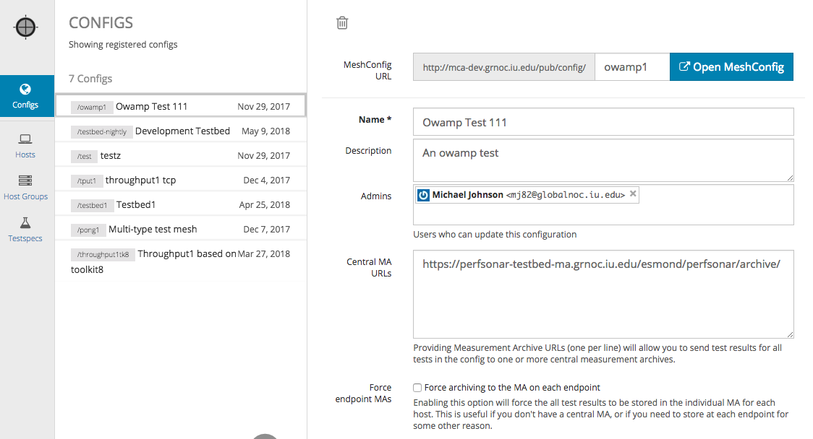
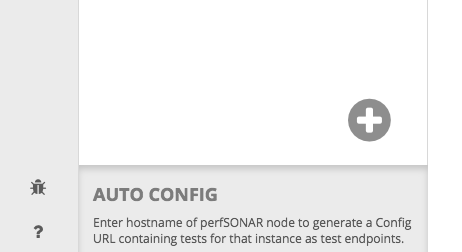
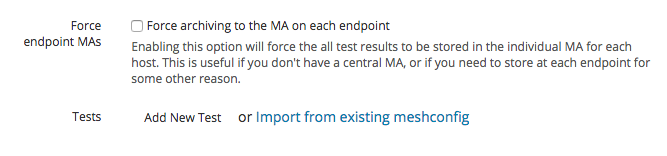
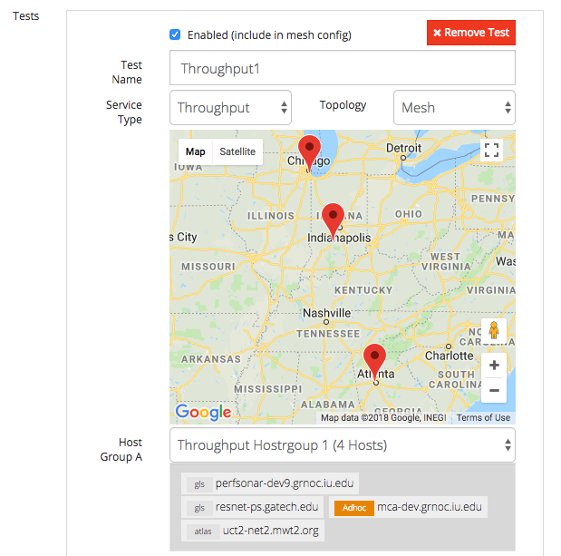
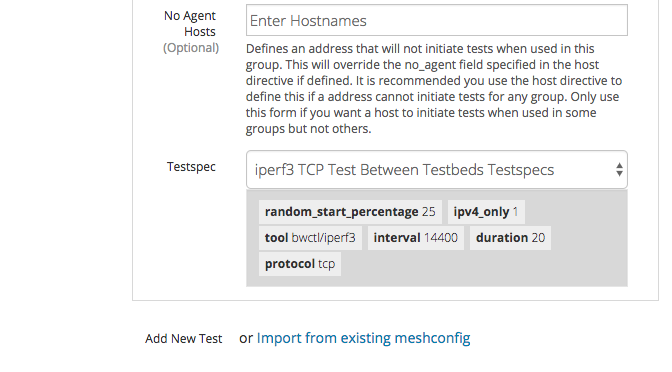
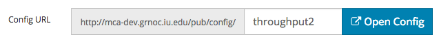
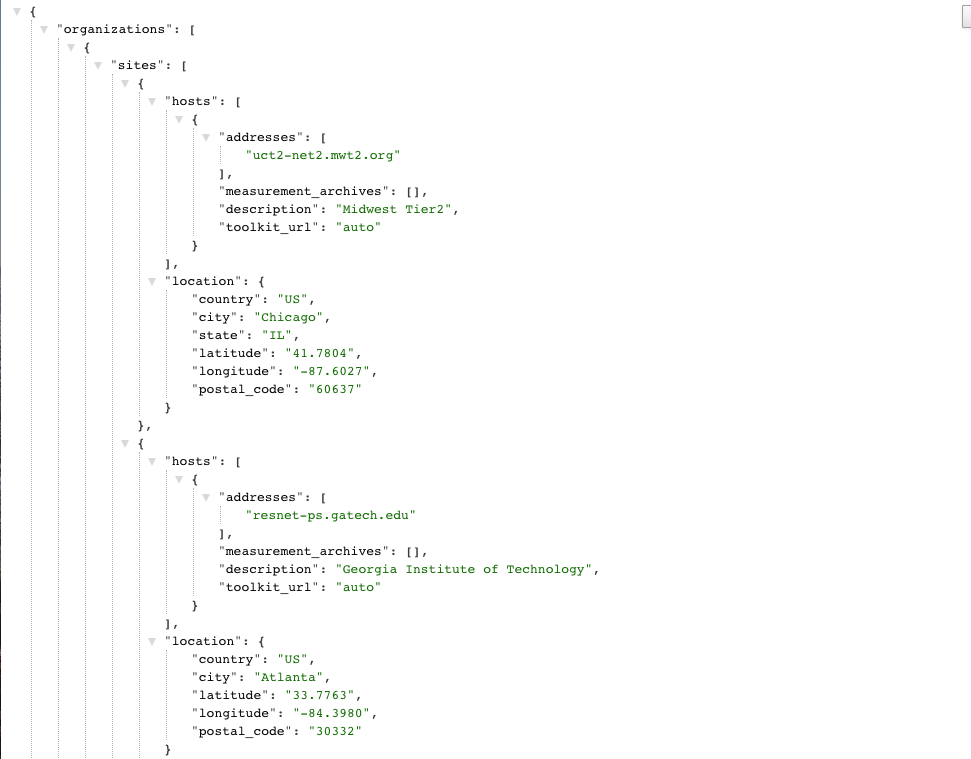

Once you define your Host Groups and Test Specs, you can now define a Config by combining those entities.
Under the “Config” section, you will see a list of Configs defined and their basic information. The links displayed next to the Config name is the actual Config URLs that users can download and subscribe on various perfSONAR services. To edit, or see more detail for each Config, click on the Config name in the Configs column.
Start adding a new Config by clicking the large “+” sign (“Add New”) at the bottom of the page.
When adding or editing a Config, these parameters are available.
Each Config can contains more than 1 test. To add a new test, click “Add New Test” button.
Enter a name for this test and select the desired Service Type and Topology. In most cases, “Mesh” will be the best choice. See pSConfig Groups for more detail on topologies.
Once you select the Service Type and Topology, you can now select Host Group(s) and Testspec. PWA shows members of the Host Group you have selected as shown below.
Don’t forget to scroll down and select the Testspec, and optionally set any “No Agent Hosts” – these are hosts that will not initiate tests, they will only participate in tests initiated by other hosts. If in doubt, leave this blank.
After you’re done adding tests, please be sure click “Create” or “Update” at the top of the page to save your changes.
You should now able to browse generated Config via the link shown on the Configs list page.
The output should look something like this:
If you want to browse JSON files formatted in a human readable way, you can install the JSONView extension for Chrome, or similar plugins for other browsers.

Under “Configs” tab, you immediately see “Auto Config”. Auto Config a special Config which is generated by aggregating all tests defined in various Configs for a specific host. Auto Config is useful if you want to configure a toolkit instance so that it will run all tests defined by any Configs it is a member of, rather than picking a specific Config.
To generate Auto config, simply choose a hostname from the hostname dropdown list.
Here is an example of Auto Config URL
http://<pwahostname>/pub/auto/<endpointhostname>
You can modify the trailing hostname to create a different auto-URL.